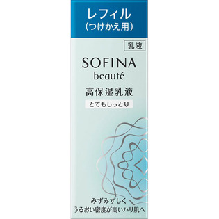

返回列表
产品名称：ソフィーナボーテ 高保湿乳液 とてもしっとり つけかえ用

花王 ソフィーナボーテ 高保湿乳液 とてもしっとり つけかえ用 ６０Ｇ
メーカー 花王
JANコード 4901301325150
商品の特徴
夜のみ使用で約３ヶ月分
- 成分・分量
- 水、グリセリン、BG、ジメチコン、PEG-32、ジカプリン酸ネオペンチルグリコール、水添ポリデセン、セチルPGヒドロキシエチルパルミタミド、ベヘン酸グリセリル、ワセリン、オリーブ果実油、アスナロ枝エキス、チューベロース多糖体、ショウガ根エキス、ユーカリ葉エキス、アルギニン、ステアロイルグルタミン酸、ジイソステアリン酸ポリグリセリル-2、セチルジメチルブチル、ラウロイルグルタミン酸ジ（コレステリル／オクチルドデシル）、キサンタンガム、カルボマー、（ジメチコン／ビニルジメチコン）クロスポリマー、水酸化K、セタノール、エタノール、エチルパラベン、メチルパラベン、香料
- 用法及び用量
- ＜使用方法＞
適量（ポンプ３押し分）を顔全体になじませます。